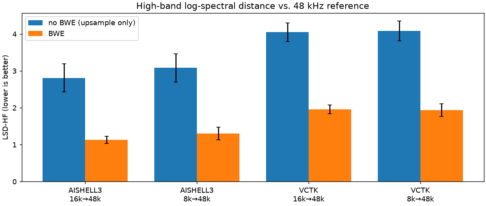
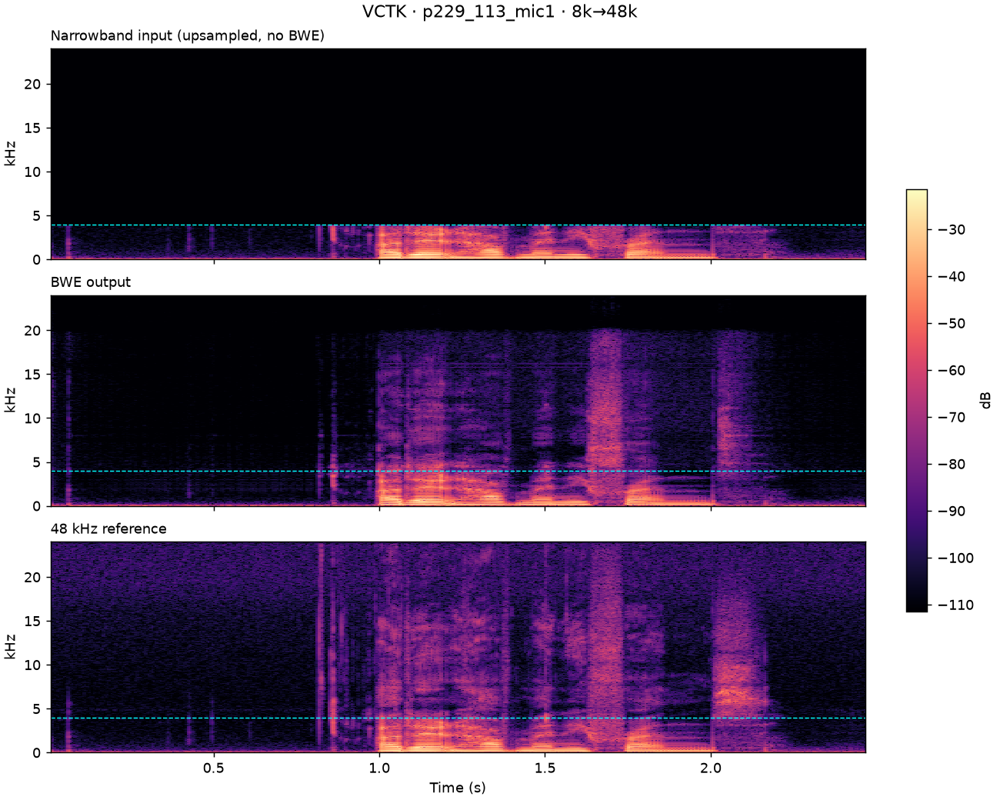
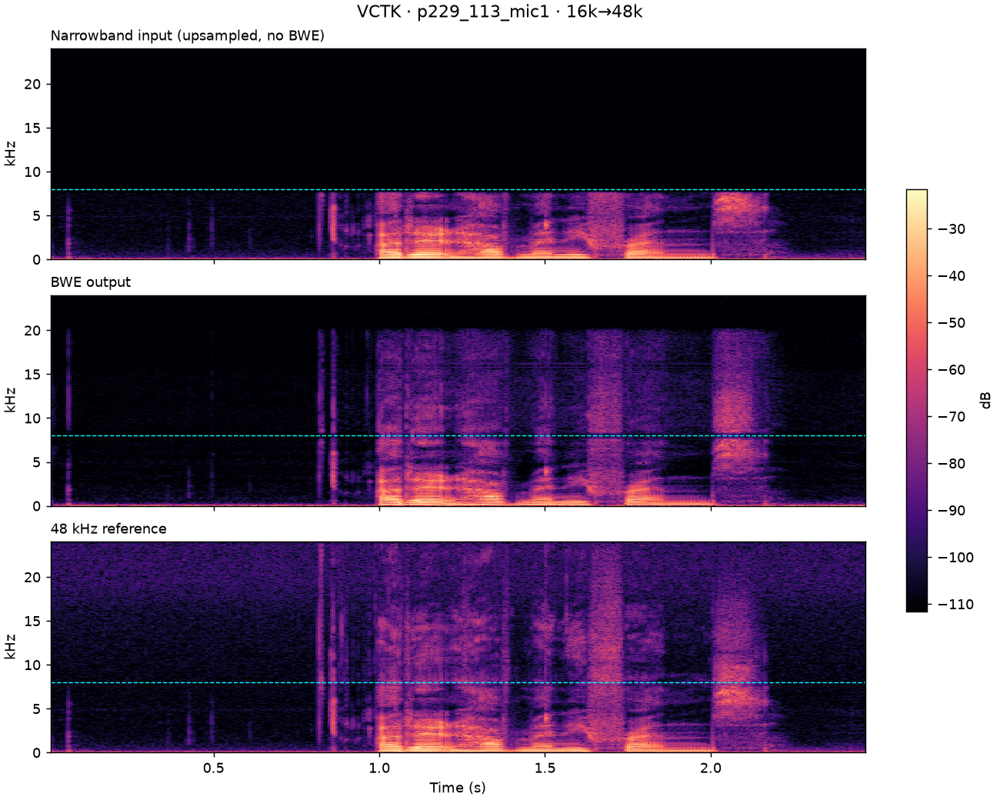
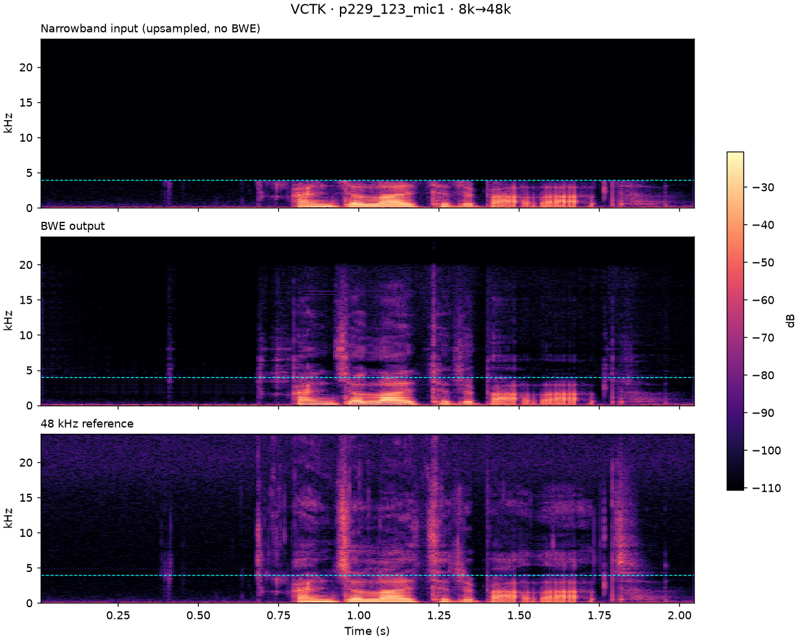
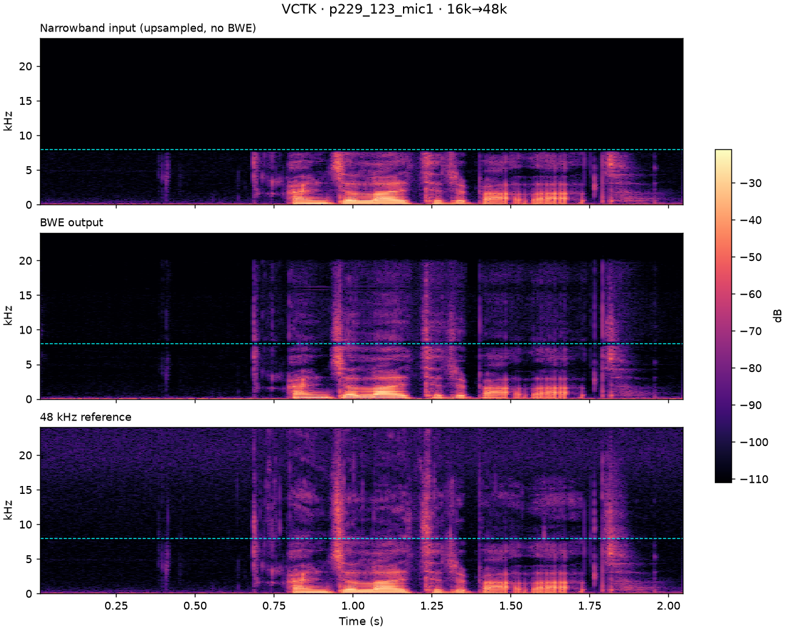
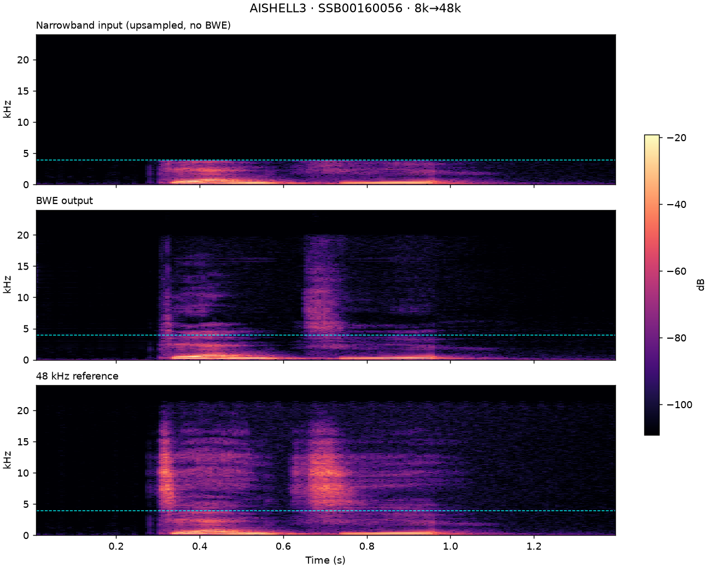
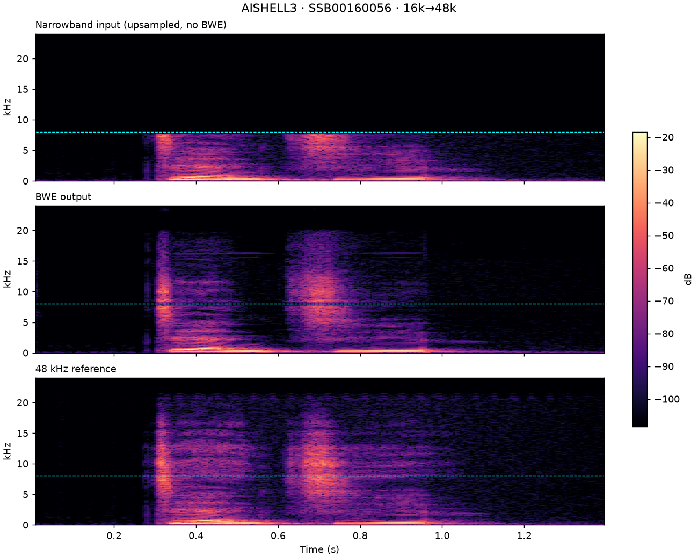
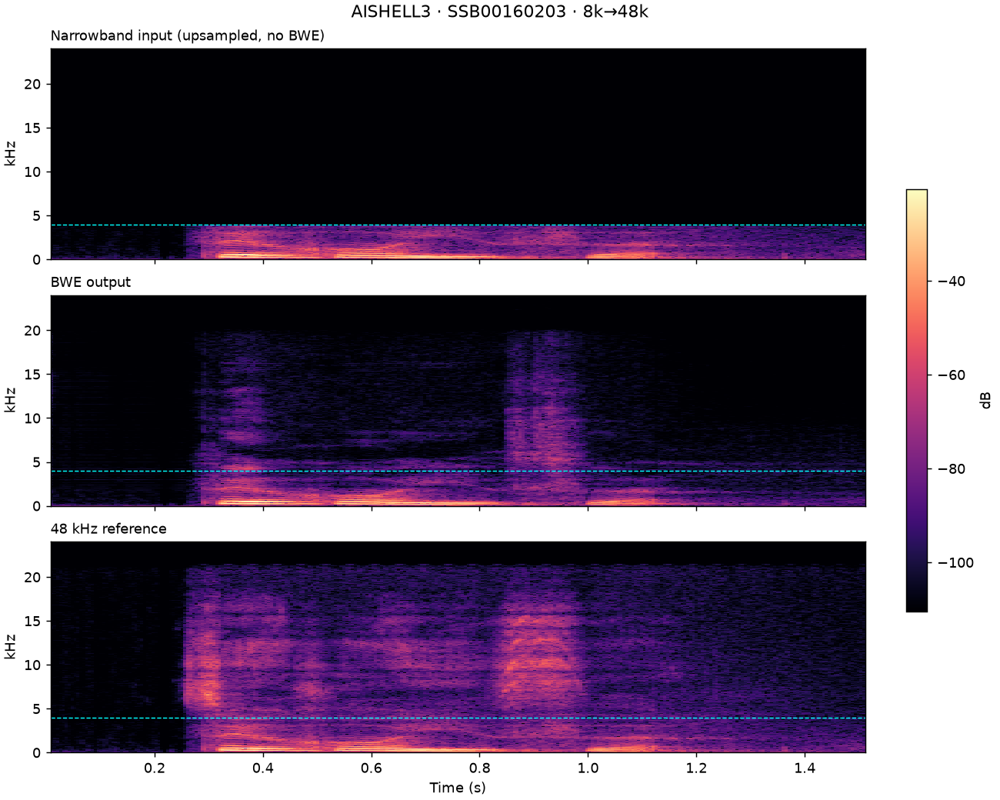
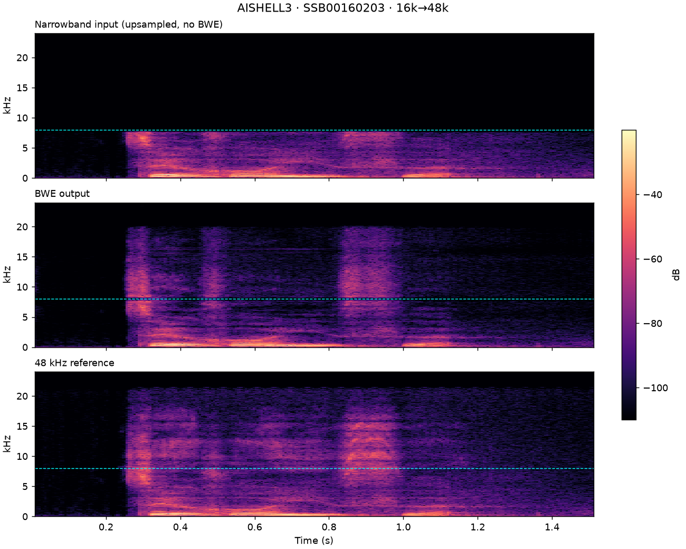

Bandwidth Extension Stream SDK — Listening Test
English · 中文
SDK 將窄頻語音（8 kHz / 16 kHz）重建為 48 kHz。每個區塊同時呈現客觀評測的頻譜圖與對應的實際音檔。 建議戴耳機聆聽，差異主要在 4 kHz 以上。
客觀評測
VCTK（英語，30 位語者 × 10 句）與 AISHELL-3（國語，30 位語者 × 10 句），以 48 kHz 原始錄音為基準評分。 無 BWE 為窄頻輸入直接升頻回 48 kHz。數值為各檔案的平均 ± 標準差；↓ 越低越好，↑ 越高越好。
| 語料 | 模式 | 系統 | 檔數 | LSD ↓ | LSD-HF ↓ | LSD-LF ↓ | SNR (dB) ↑ |
|---|---|---|---|---|---|---|---|
| VCTK | 8k→48k | 無 BWE | 300 | 3.740 ± 0.241 | 4.083 ± 0.264 | 0.769 ± 0.054 | 19.10 ± 4.72 |
| BWE | 300 | 1.801 ± 0.156 | 1.940 ± 0.172 | 0.753 ± 0.054 | 14.38 ± 2.42 | ||
| VCTK | 16k→48k | 無 BWE | 300 | 3.333 ± 0.208 | 4.048 ± 0.254 | 0.745 ± 0.053 | 25.10 ± 5.63 |
| BWE | 300 | 1.668 ± 0.094 | 1.956 ± 0.115 | 0.806 ± 0.054 | 15.98 ± 2.14 | ||
| AISHELL-3 | 8k→48k | 無 BWE | 297 | 2.831 ± 0.345 | 3.083 ± 0.381 | 0.731 ± 0.062 | 23.07 ± 6.68 |
| BWE | 297 | 1.234 ± 0.155 | 1.306 ± 0.171 | 0.726 ± 0.084 | 15.65 ± 2.63 | ||
| AISHELL-3 | 16k→48k | 無 BWE | 297 | 2.334 ± 0.306 | 2.809 ± 0.380 | 0.732 ± 0.070 | 29.59 ± 7.70 |
| BWE | 297 | 1.030 ± 0.082 | 1.129 ± 0.096 | 0.771 ± 0.089 | 16.38 ± 2.95 |

評測語句
前處理與上表數據完全相同：參考音檔 RMS 正規化至 −26 dBFS，以 soxr 限制頻寬， 經 SDK 處理後輸出為 16-bit PCM。
VCTK · p229_113 英語


| 8 kHz 輸入窄頻 | |
| 8 kHz → BWE48 kHz 輸出 | |
| 16 kHz 輸入窄頻 | |
| 16 kHz → BWE48 kHz 輸出 | |
| 48 kHz 參考原始錄音 |
VCTK · p229_123 英語


| 8 kHz 輸入窄頻 | |
| 8 kHz → BWE48 kHz 輸出 | |
| 16 kHz 輸入窄頻 | |
| 16 kHz → BWE48 kHz 輸出 | |
| 48 kHz 參考原始錄音 |
AISHELL-3 · SSB0016_0056 國語


| 8 kHz 輸入窄頻 | |
| 8 kHz → BWE48 kHz 輸出 | |
| 16 kHz 輸入窄頻 | |
| 16 kHz → BWE48 kHz 輸出 | |
| 48 kHz 參考原始錄音 |
AISHELL-3 · SSB0016_0203 國語


| 8 kHz 輸入窄頻 | |
| 8 kHz → BWE48 kHz 輸出 | |
| 16 kHz 輸入窄頻 | |
| 16 kHz → BWE48 kHz 輸出 | |
| 48 kHz 參考原始錄音 |
真實錄音
手機錄製的國語語音，無 48 kHz 參考音檔 — 僅提供輸入與輸出。
統神鼎王 國語 · 手機錄音
| 8 kHz 輸入窄頻 | |
| 8 kHz → BWE48 kHz 輸出 | |
| 16 kHz 輸入窄頻 | |
| 16 kHz → BWE48 kHz 輸出 |
控八控控 國語 · 手機錄音
| 8 kHz 輸入窄頻 | |
| 8 kHz → BWE48 kHz 輸出 | |
| 16 kHz 輸入窄頻 | |
| 16 kHz → BWE48 kHz 輸出 |